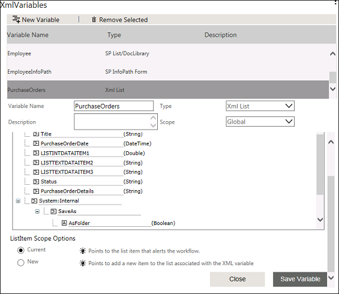
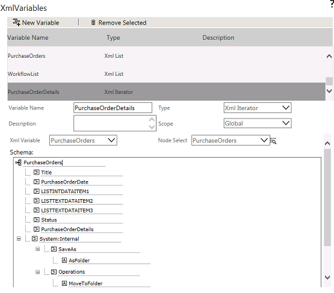
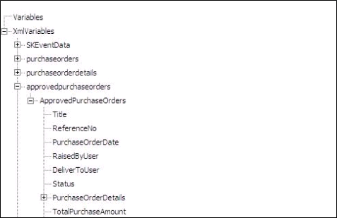

No
Copying a List Item with Grid Items
AVEVA Work Tasks allows you to copy a list item with grid items to another list provide both the lists have the same schema. You can perform this task with the help of Update Variable activity. To iterate through the grid items, you need to create XML Iterator type XML variable for the grid. This feature can be explained with the help of a scenario.
"Telematics" is an organization which maintains a Purchase Orders list to keep a track of all the purchase orders raised by the company.
The purchase Orders contains details like:
- Reference Number
- Purchase Order Date
- Raised By User
- Deliver To User
- Status
- Purchase Order Details
- Item Name
- Quantity
- Unit Price
- Item Total
- Total Purchase amount
Telematics also maintains another list called Approved Purchase Order which has the same schema of the Purchase Order list. Now you want to copy an item with grid (Purchase Order approved) to the Approved Purchase Order list when the item is approved.
To copy a list item with grid items
- Login to the Enterprise Console and go to Workflow Designer.
- You need to create an XML List type XML variable for the Purchase Order list. If the variable is not created, follow the below mentioned procedure to create.
- Click the edit icon in the XMLVariables property from the Start Activity Properties.
- Here, for Purchase Order list you need to create an XML List type XML variable to work with the current purchase order item and XML Iterator type XML variable to loop through the child/grid nodes of the current purchase order item.
- Click New Variable to add a new variable.
- Type the variable name as 'purchaseorders'.
- Select type as XML List from the Type drop-down list.
- Type the List name in the Select List field or click the icon to select the list. In this case, select Purchase Orders list.
- Select Current as the scope from the ListItem Scope to point to the an item in the list.

- Now you can see the XML nodes in a tree-view that are mapped to the controls while creating the list. You can notice that the parent XML nodes and child XML nodes (PurchaseOrderDetails grid) are also displayed.
- Click Save Variable. A message is displayed saying 'Variable Updated'.
- Now, you need to create XML Iterator type XML variable to iterate through the child nodes (in this case, PurchaseOrderDetails). For that, click New Variable from the XML Variable screen.
- Enter the variable name as purchaseorderdetails.
- Select XML Iterator as type from the Type drop-down list.
- Select purchaseorders from the XML Variable drop-down list.
- From the Node Select drop-down, select the repeating node, that is PurchaseOrderDetails.

- Click Save Variable. A message is displayed saying 'Variable Updated'.
- In the same way you have to create XML variables for Approved Purchase Order list. For Approved Purchase Order list, you need to create XMLList type XML variable to add an item and a XML Iterator type XML variable to map to the grid items of the new purchase order item.
- Click New Variable to add a new variable, from the XML Variable property of Start activity.
- Enter the variable name as approvedpurchaseorders in the Variable Name field.
- Select XML List as type from the Type drop-down list.
- Enter the List name in the Select List field or click the icon to select the list. In this case, select Approved Purchase Orders list.
- Select New as scope from the ListItem Scope Options to point to the new item in the list.
- Now you can see the XML nodes in a tree-view that are mapped to the controls while creating the list. You can also notice that the parent XML nodes and child XML nodes (PurchaseOrderDetails grid) are also displayed.
- Click Save Variable. A message is displayed saying 'Variable Updated'.
- You need to create XML Iterator type XML variable to iterate through the child nodes. For that, click New Variable from the XML Variable screen.
- Enter the variable name as approvedpurchaseorderdetails.
- Select XML Iterator as type from the Type drop-down list.
- Select approvedpurchaseorders from the XML Variable drop-down list.
- From the Node Select drop-down, select the repeating node, that is PurchaseOrderDetails.
- Click Save Variable. A message is displayed saying 'Variable Updated'.
- Drag and drop Update Variable activity to set value for the parent nodes or the item.
- Click the edit icon in the Set Variables property.
- Click the Select link and select the respective field of the XML List type XML Variable created for the list (in this case approvedpurchaseorders). The fields displayed in the tree-view represent the XML nodes of the controls in the list.

- Select a field for which you want set the value from the tree-view under approvedpurchaseorders. The selected variable for the field Title will be displayed in the text box as 'XMLVariables.approvedpurchaseorders.ApprovedPurchaseOrders.Title.'
- Enter the value for the field in the right-hand side text box. Select the respective field of the purchaseorders XML variable (purchase order item to be copied). The selected XML variable for the field will be displayed as 'XMLVariables.purchaseorders.PurchaseOrders.Title'. Set the value for all other fields in the same way.
- After setting the value for all the fields in the parent form (controls in the main form) that you want to add, click Ok. This will add a list item to the new list (Approved Purchase Order), while executing the workflow, with the values in the current Purchase Orders item.
- Next, you need to iterate through the grid/child items of the current purchase order and to add the child items in the new list (Approved Purchase Order). Drag and drop ForEach-Loop activity to loop through the grid items.
- Select XML Iterator type XML variable that you have created for the current Purchase Order from the XML Iterator drop-down list (in this case, purchaseorderdetails).
- If you want to add an item to the grid (in this case, if you want to add a purchase order details grid item), use XML Navigator activity. XML Navigator can be used to point to an item in the grid (purchaseorderdetails in this case).
- Drag and drop XML Navigator activity.
- Select approvedpurchaseorderdetails from XML Iterator drop-down list and select Yes from Create New Node properties to create a new node.
- Select the appropriate Location. The available options are:
- First: Navigates to the first record in the collection.
- Last: Navigates to the last record in the collection.
- Next: Navigates to the next record based on the current location.
- Previous: Navigates to the previous record based on current location.
- Index: Navigates to the record identified in the Index field.
Since we have to append the items in Purchase Order Details grid, select the option as Last.
- Click Save.
- Drag and drop Update Variable activity to set the value for the grid item fields of the new list item.
- Click the edit icon in the Set Variables property.
- Click the Select link and select the respective field of the XML List type XML Variable created for the list (in this case ApprovedOrderDetails). The fields displayed in the tree-view represent the XML nodes of the controls in the list.
- Select the XML variable PurchaseOrderDetails from the tree-view. You can either select PurchaseOrderDetails node or select all child nodes separately. In this case, you are selecting the PurchaseOrderDetails node. The variable will be displayed in the text box as 'XMLVariables.approvedpurchaseorderdetails.PurchaseOrderDetails'.
- Set the value in the right-hand side text box. Select the respective field of the purchaseorderdetails XML variable (purchase order item to be copied) from the tree-view. The selected variable will be displayed in the text box as 'XMLVariables.purchaseorderdetails.PurchaseOrderDetails'.
- After setting the value for the fields in the child item that you want to add, click OK. This will add a grid item to the new list (Approved Purchase Order), while executing the workflow, with the values in the current (Purchase Order) list.
Note: You can also select each node in the grid separately and set the value for each node.
- Complete the loop with a Next activity and finish the workflow with appropriate link conditions.